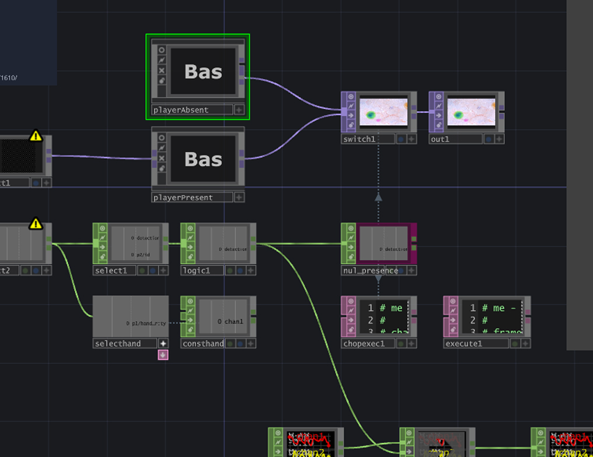
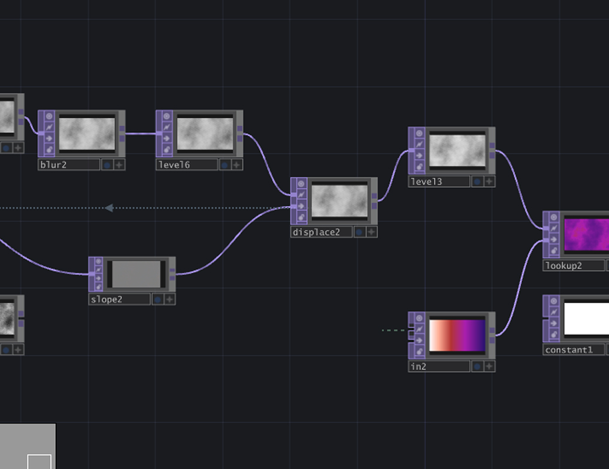
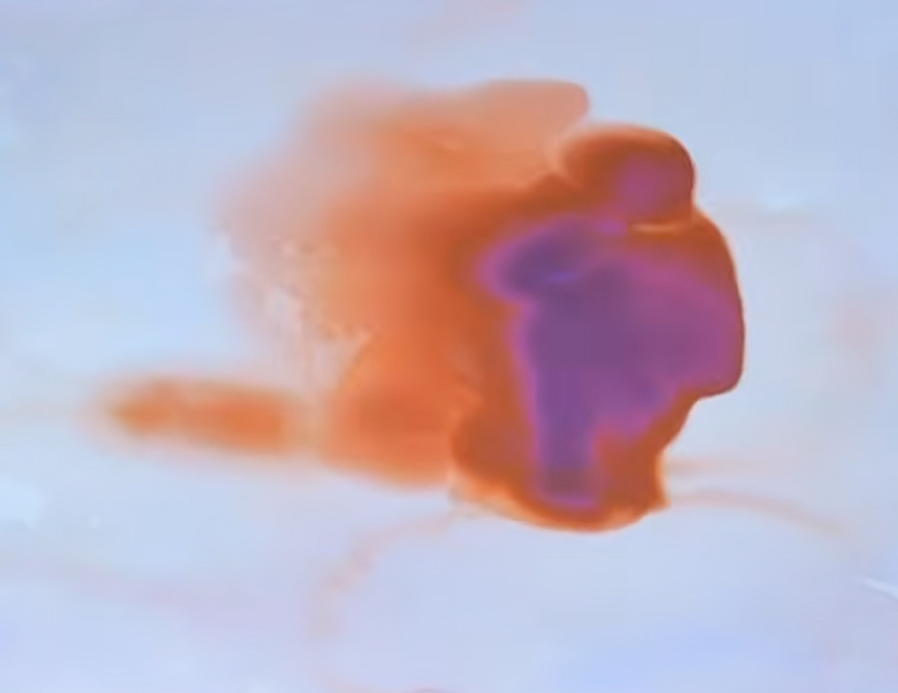
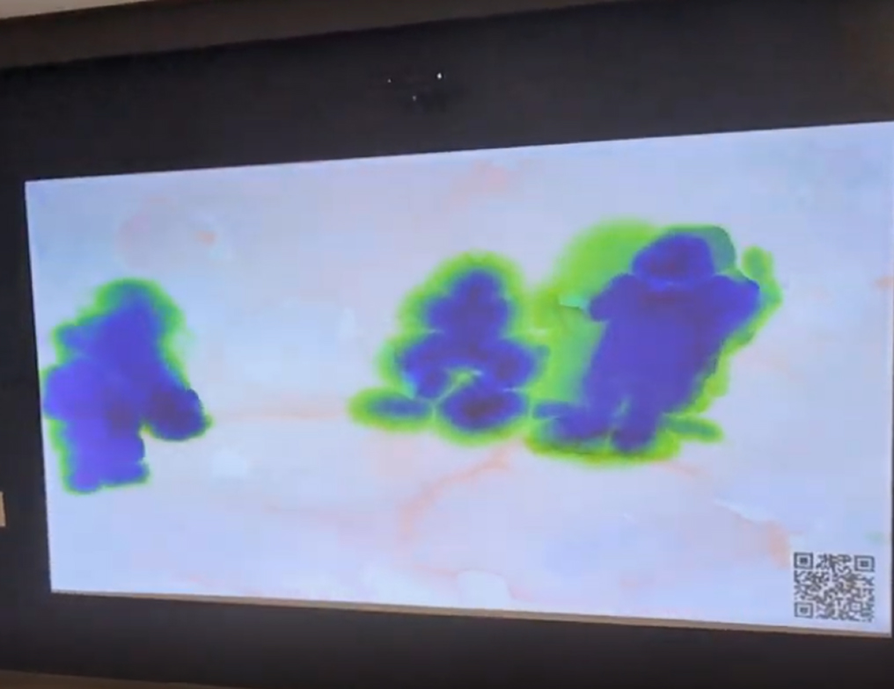
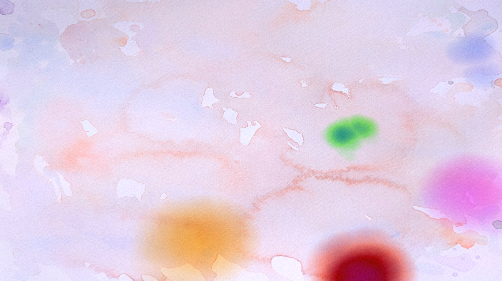
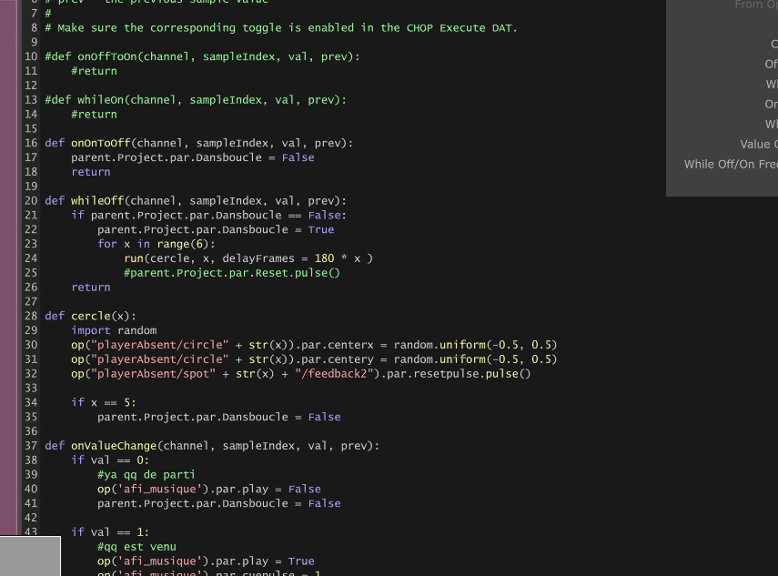
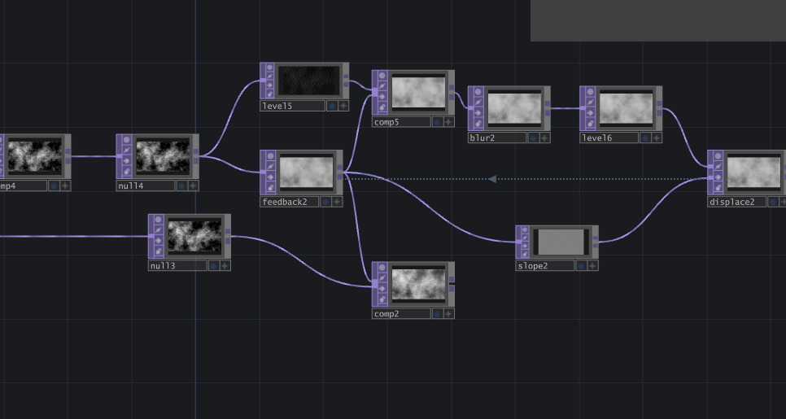

Ce projet a été créé en cours de médias interactifs ayant pour but de créer une expérience interactive avec une kinect. Comme le projet est affiché dans un corridor, j'ai décidé de créer une expérience visuelle plutôt qu'un jeu. L'idée d'une peinture aquarelle m'est alors venue.
Les assets visuels utilisés dans ce projet ont été créés par moi. Le son a été pris de pixabay. J'ai suivi un tutoriel de elekktronaut sur youtube afin de partir le visuel de mon projet.
Aucune intelligence artificielle n’a été utilisée pour ce projet.


1.
La première étape de ce projet a été de trouver le concept. Je voulais y aller avec une expérience visuelle plus que un jeu. L'idée m'est alors venu de utiliser un visuel d'aquarelle.
2.
J'ai créé la logique entre la version avec une personne présente et aucune personne présente. Le son arrête aussi de jouer lorsqu'il n'y a pas personne.
3.
J'ai suivi un tutoriel pour commencer le tutoriel. Une fois complété, j'ai ajusté le projet pour suivre mes besoins avec ce que je voulais atteindre pour mon projet.
4.
Une fois la base du projet complété, j'ai ajouté d'autres effets comme celui du changement de la couleur quand quelqu'un lève le bras.
5.
Une fois le projet terminé, il a été affiché dans le corridor de l'école pour tous le monde qui passe devant.









Ce projet m'a permis que créer du visuel dans touch designer qui réagis à des données, dans ce cas-ci avec une kinect, et d'explorer la programmation nodale.